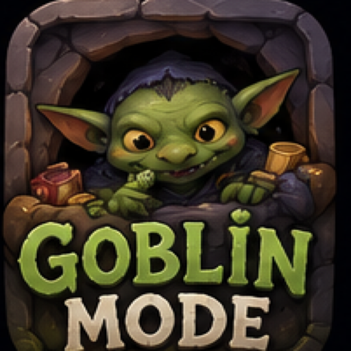
Native iOS appGoblin Mode
Tiny useful quests for low-friction days: drink water, eat real food, leave the cave, use the deal, clear one surface, or make one small step on a creative project.
- No account
- No ads
- No tracking
- No cloud AI required
What it is
A cozy quest board for getting through the day.
Goblin Mode makes the next useful action visible without turning life into a punishment system. The app uses local sample data, native persistence, and a rule-based advisor that works offline.
It is built for the moments where a big plan is too much and a tiny, specific action is exactly enough.
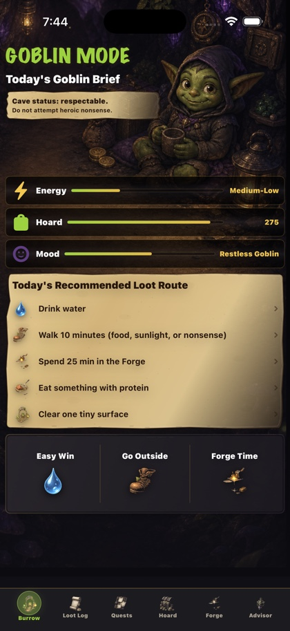
Core app
Everything in the MVP has a job.
Reviewed screens
Complete native app tour.
Each section below was captured from the iOS Simulator during launch review.
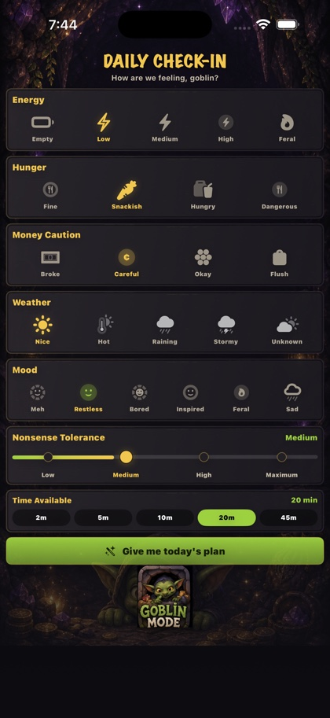
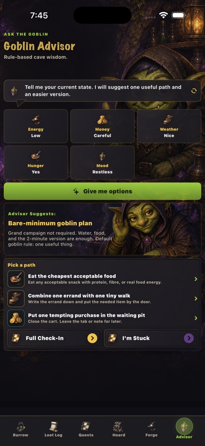
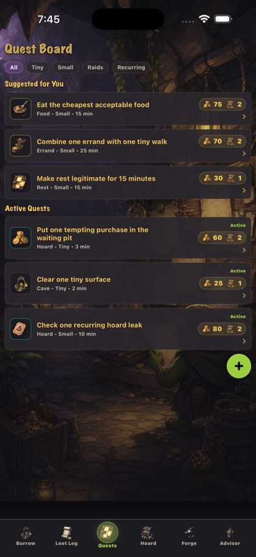
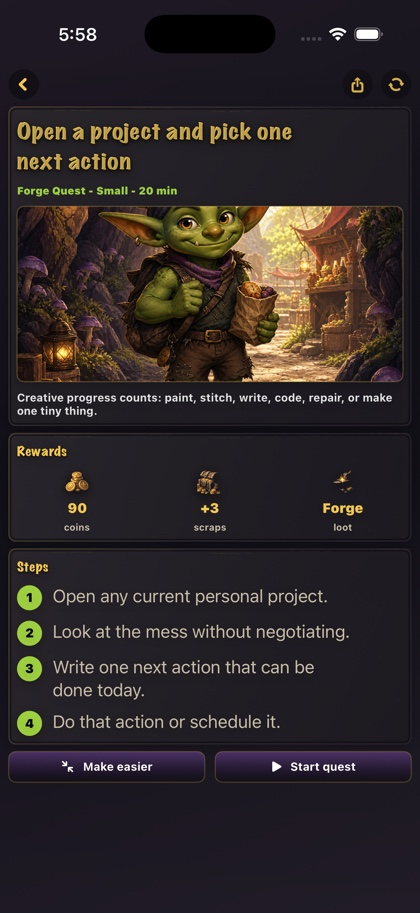
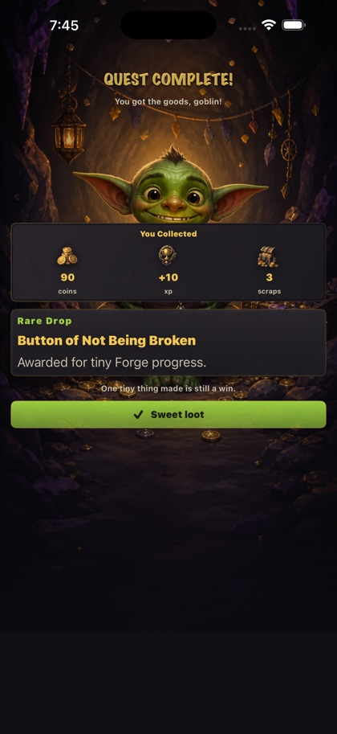
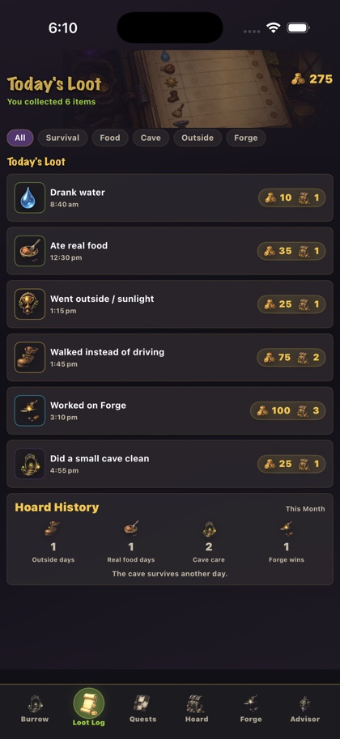
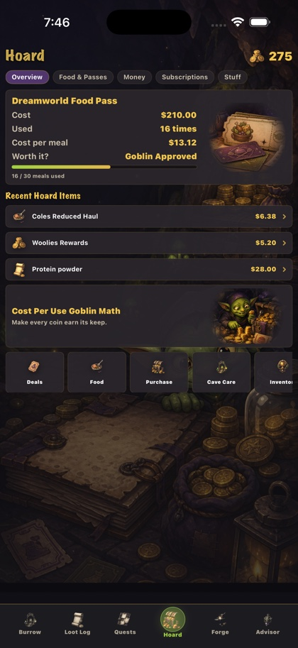
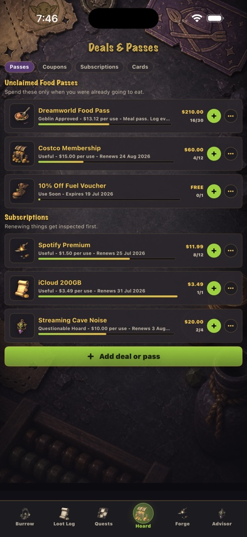
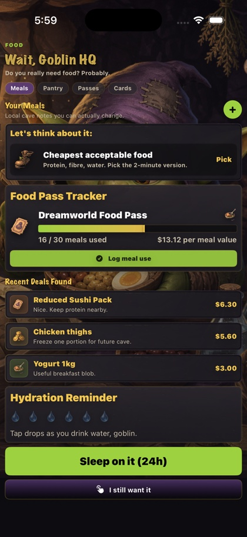
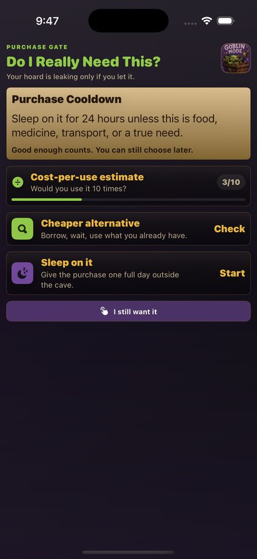
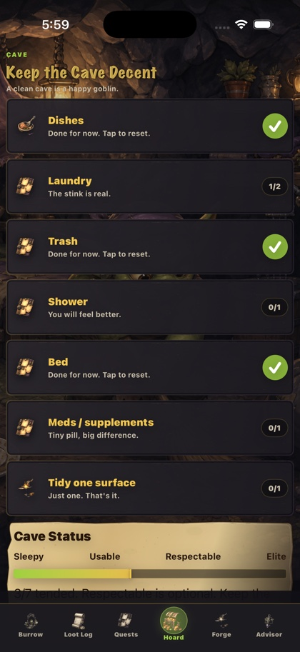
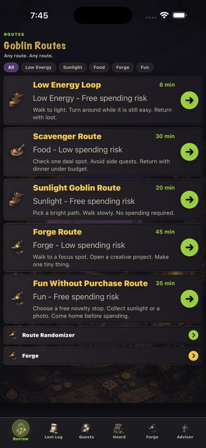
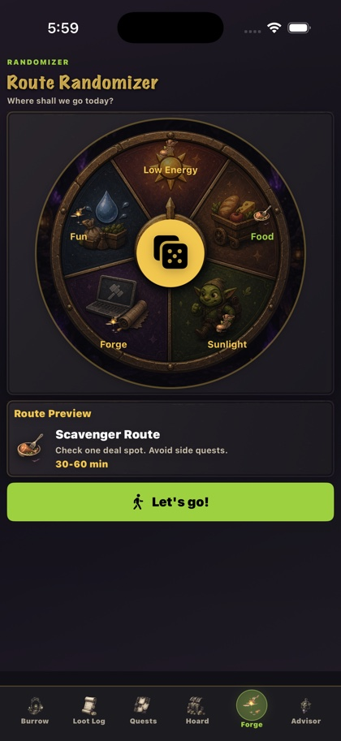
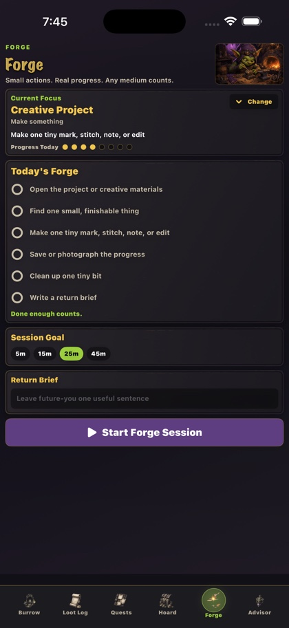
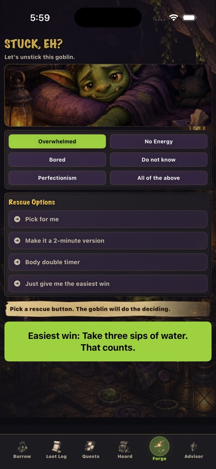
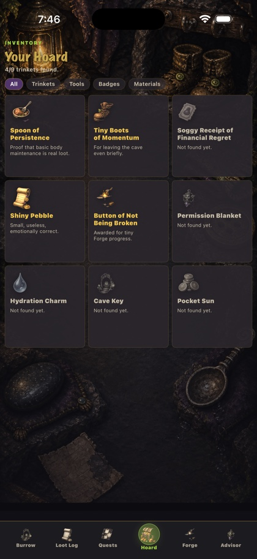
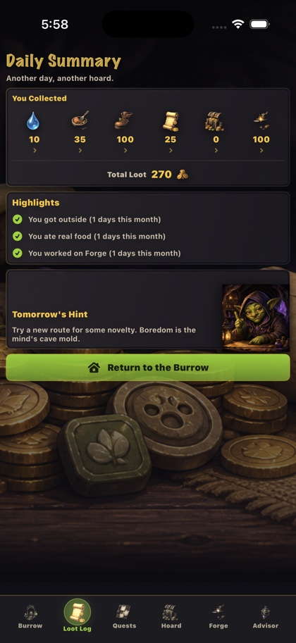
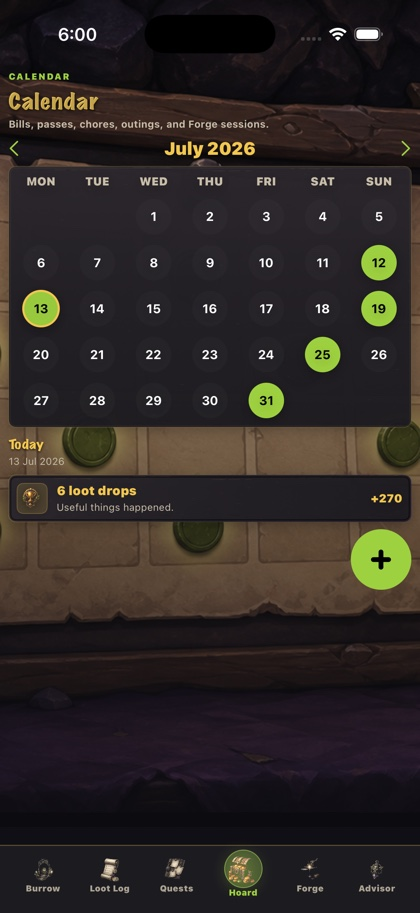
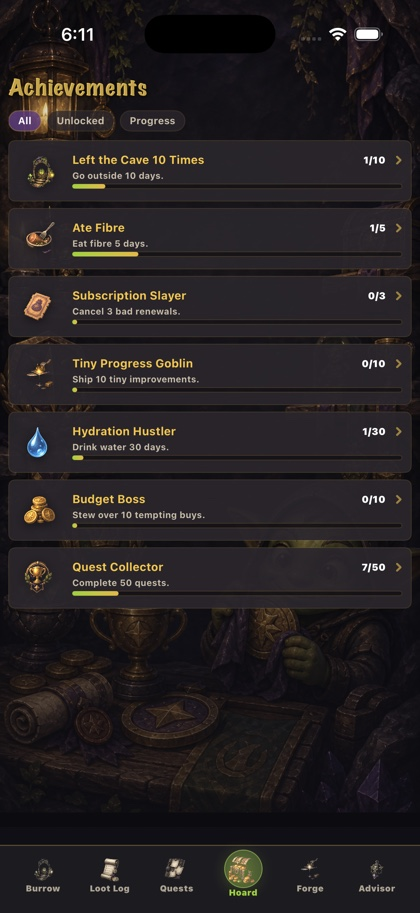
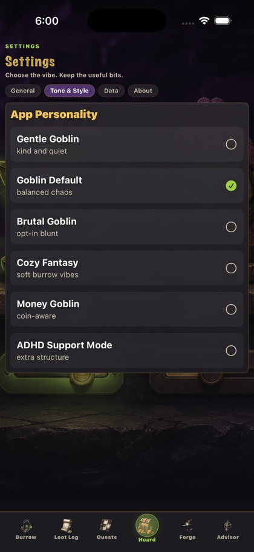
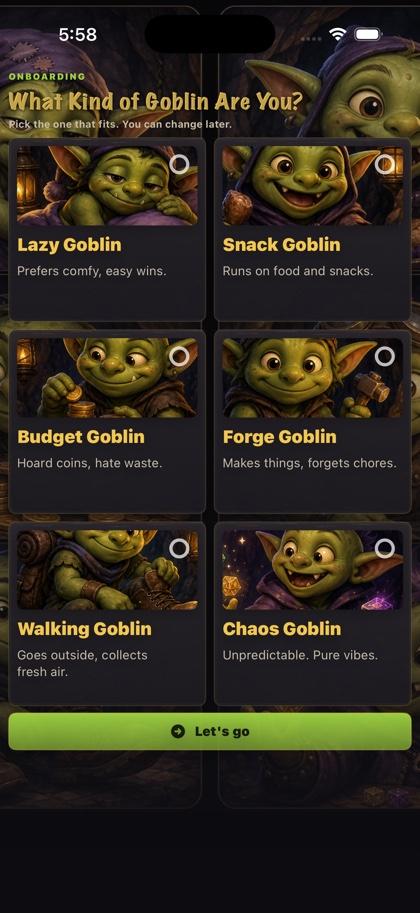
Launch readiness
Built to be simple to review and simple to trust.
FAQ
Plain answers for launch.
Does Goblin Mode need an account?
No. The MVP is designed to work locally on device.
Does the advisor use AI?
No. The advisor is rule-based and works without API keys, subscriptions, server calls, or cloud services.
Is this medical, nutrition, financial, or mental health advice?
No. Goblin Mode is a productivity and self-management tool. It offers small prompts, not professional advice.
Tiny progress still counts.
Use Goblin Mode when a full plan is too much and one useful action is enough.